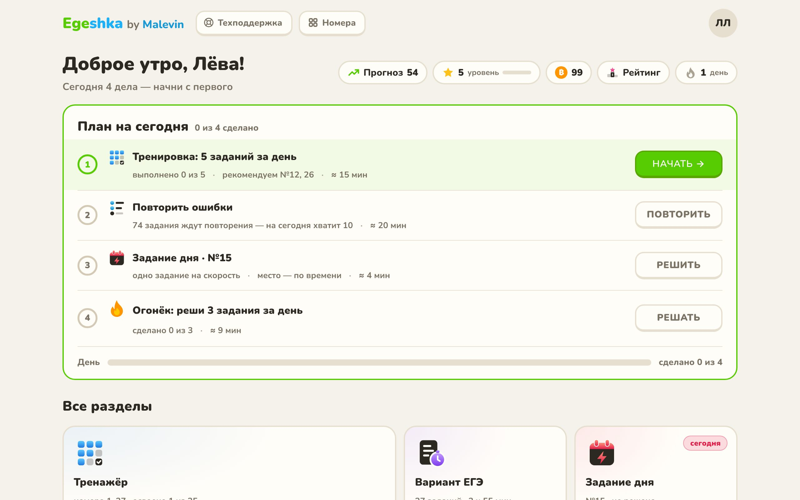
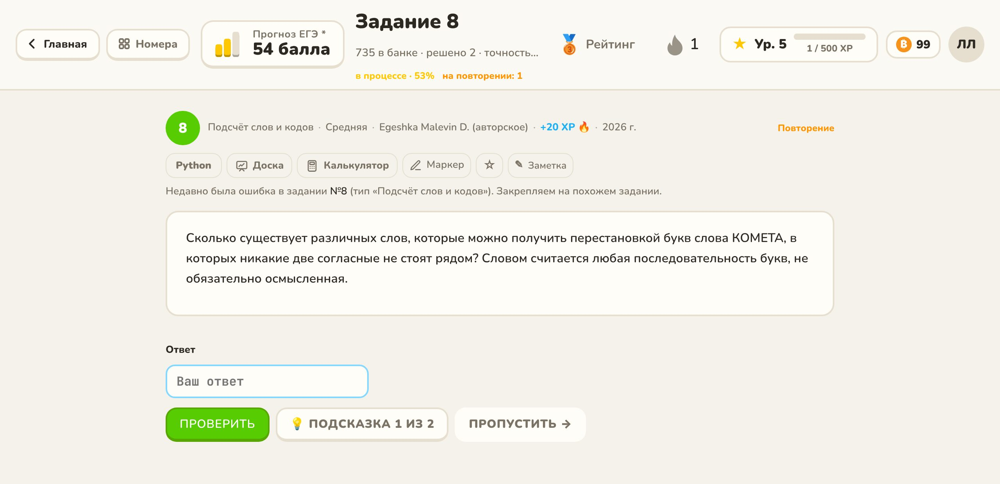
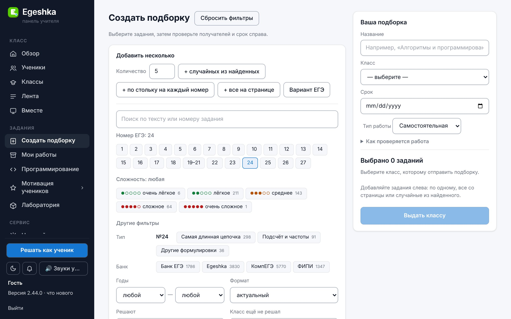

Выдать работу
Создайте класс, пригласите учеников и выберите готовую подборку или свои задания.
Попробовать на демо-классе →Все 27 номеров с проверкой ответа и разбором. Каждый день сайт сам собирает короткий план: что потренировать и какие ошибки повторить. Учитель видит результаты класса.
Войти в кабинет учителя Доступ после подтверждения почты и модерации главным учителем.

Создайте класс, пригласите учеников и выберите готовую подборку или свои задания.
Попробовать на демо-классе →Откройте результаты: кому нужна помощь, какие номера повторить и как ученик пришёл к ответу.
Посмотреть журнал →Общий код, доска и модели заданий помогают объяснить трудный шаг, а затем дать самостоятельную практику.
Посмотреть инструменты →Пример с вымышленными учениками: настоящий класс не создаётся.
5 учеников · результаты показаны для знакомства с журналом
В настоящем кабинете сначала нужны подтверждение почты и одобрение главным учителем.
Выберите тему и выдайте пример. Затем откройте результат ученика, чтобы выбрать следующий шаг.
Не получается — подсказка в два шага, потом разбор. Задание с ошибкой через несколько дней вернётся на похожем примере.

Подробные уроки и краткие разборы по номерам. Программу со слайда можно запустить или пройти по шагам.
Загружаем карту материалов. Если она недоступна, количество уроков не подтверждено.

Карта наполнения курса
Количество заданий показывает объём доступного банка, а не полноту всех типов ЕГЭ. Материалы открывает учитель; карта доступна без регистрации.
| Номер и тема | Подробный урок | Краткий разбор | Лаборатория | Практика |
|---|---|---|---|---|
| Загружаем сведения о материалах… | ||||
Подробный урок и краткий разбор — альтернативные форматы одной темы. №19–21 используют общий урок и общий модуль Python. Архивные темы не входят в 27 номеров.
Выберите номер или приём решения: карта укажет конкретные слайды, уровни Python и учебные модели. Наличие материала не подтверждает полноту навыка. Содержательная проверка покрытия и независимая проверка ответов всего банка ещё не выполнены.
Типы банка определяются автоматически. Части №19–21 считаются у своих номеров; общие материалы не становятся отдельными уроками. Счётчики широкого типа не складываются со счётчиками его отдельных приёмов.
Сведения загрузятся после раскрытия блока.
Ничего не нужно устанавливать. Код выполняется по шагам: видно текущую строку и значение каждой переменной.

Подборки по шаблонам, контрольные, журнал с ответами каждого ученика и сводка по слабым номерам. На снимках — демо-класс с вымышленными учениками.




Подтвердите почту и дождитесь одобрения главным учителем.
На главной ученика — план на сегодня из 3–4 дел. А это помогает не бросать: